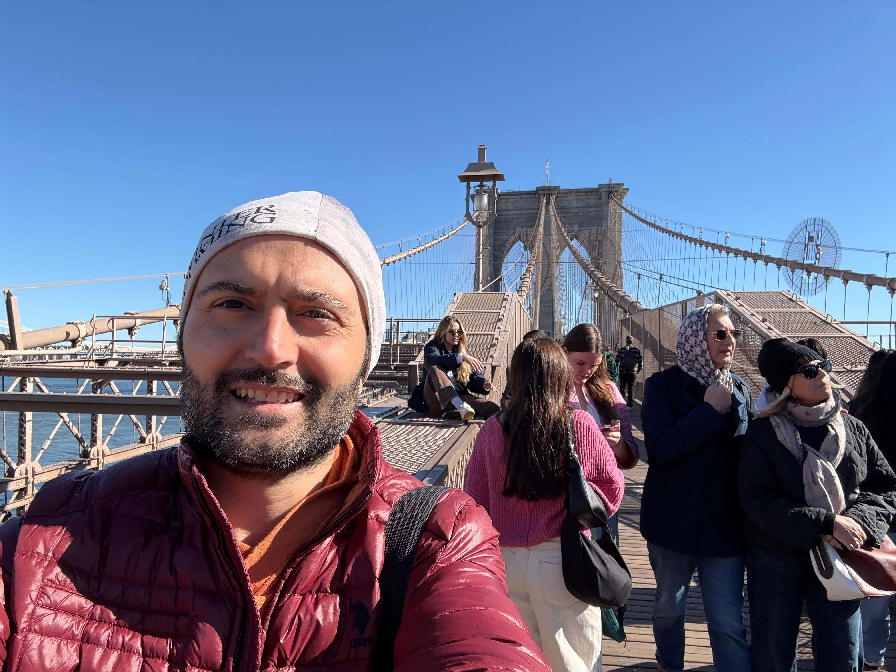

Brooklyn Bridge
New York City · United States
Brooklyn Bridge is far more than a crossing between Manhattan and Brooklyn; it is one of the defining landmarks of New York City and a remarkable achievement in American engineering. Completed in 1883, it was among the longest suspension bridges in the world at the time and became an enduring symbol of the city's ambition and growth. Its monumental stone towers, elegant cable network, and elevated pedestrian walkway create a distinctive architectural experience above the East River. From the bridge, visitors can admire the Manhattan skyline, the waterfront, and the dynamic relationship between two of New York's most historic boroughs. Walking across it offers a chance to experience the city from a different perspective, where history, architecture, and urban life meet.
My Photo Gallery
A collection of my personal photographs and memories from Brooklyn Bridge, New York City.
View All Photos ↗